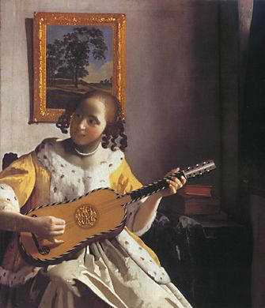
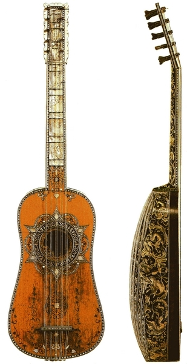
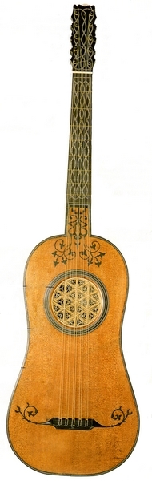
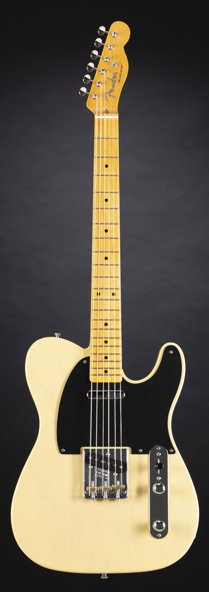

 La guitare est un instrument très ancien et les premières mentions de la guitare remontent au 14ème siècle. Dans sa forme la plus ancienne, il avait trois cordes doubles (paires), plus une corde simple (la plus haute). La guitare est probablement d'origine espagnole, où au XVIe siècle, les classes moyennes et inférieures de l'aristocratie utilisaient un instrument de forme et d'origine similaires, avec six cordes doubles.
La guitare est devenue populaire dans d'autres pays européens aux 16e et 17e siècles, et à la fin du 17e siècle, une cinquième corde a été ajoutée parmi les quatre autres. Au milieu du XVIIIe siècle, la guitare a pris sa forme moderne lorsque le système à double corde a été remplacé par des cordes simples et qu'une sixième corde basse a été ajoutée. Au XIXe siècle, les luthiers ont élargi le torse, augmenté la courbure de la taille, aminci les côtes et modifié le contreventement interne. Les anciennes épingles en bois ont été remplacées par des machines à voter modernes. 
 La guitare classique est un descendant du luth. Il s'est développé dans sa forme moderne en Espagne au début des années 1800. L'homme responsable de la conception moderne était un charpentier nommé Antonio de Torres Jurado (1817-1892). En 1869, lorsqu'il vend une guitare à Francisco Tarerga, la guitare est balayée du piano et met à peine un pied dans les salles de concert. L'Espagne, qui s'était opposée au piano, utilise néanmoins la guitare des paysans, des gitans et des personnes qui jouent dans les bars pour changer. La chose la plus fondamentale que Torres ait faite est d'agrandir le corps. La guitare de concert de Torres, qui a été introduite au début des années 1850, possède une rosette environ 20 % plus grande que les guitares de concert que Fernando Sor et Aguado Dionisio jouaient quelques années auparavant.
La guitare électrique, qui a été développée pour la musique populaire aux États-Unis dans les années 1930, a généralement un corps solide qui manque de résonance. Le son des cordes est à la fois amplifié et manipulé électroniquement par l'interprète. Le musicien et inventeur américain Les Paul a développé des prototypes de guitares électriques à corps plein et a popularisé l'instrument au début des années 1940. Grâce à sa connaissance de la technologie existante, il savait qu'il pouvait améliorer les instruments, renforcer les corps creux - et il l'a fait. En 1948, il met au point la légendaire Telecaster (initialement appelée Telecaster). La Tele, comme on l'appelle affectueusement, a été la première guitare électrique à corps plein à être commercialisée. 